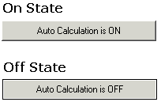

Automation in Scriptable Objects |
| Overview |
A Scriptable Object (including any of the Mathsoft Controls) may access Mathcad's Automation interface in its script. Specifically, you can refer to worksheet variables - numbers, strings, arrays - directly, and you can get and set properties and call methods of the worksheet, the application, and the window.
You may need to explicitly include a Recalculate method for the control or the worksheet, since this activity is automatically handled by the Input and Output variables on the control, but not necessarily by Automation commands.
You can get and set worksheet values using the Automation commands GetValue and SetValue in a script, in addition to using the input and output values on the control. However, the datavalues collection, presented as input and output variables to the component in the worksheet, are what allow a scripted component to interact with a Mathcad worksheet's calculations. You must assign input values to any component that will use worksheet variables, even if you access the value of the variable through GetValue or SetValue methods. The input and output collections are only available inside the Exec event, so you will need to use Automation methods to work with variable values in other event handlers, such as the Click() event handler shown in the example below.
If there are multiple bindings of the same variable name in your worksheet, the GetValue method can crash Mathcad when used in a scripted component. If the GetValue method is used in a scripted component, the variable name must appear only once in the document, in addition to being supplied as an input to the component.
| Simple Annotated Example |
Here is an annotated example that shows how a button can be used to enable and disable Automatic Calculation in the active worksheet. Other worksheets containing controls are located in the qsheet\Samples\Controls subdirectory of your installation of Mathcad.
Dim state
Sub PushBtnEvent_Start()
Rem TODO: Add your code here
End Sub
Sub PushBtnEvent_Exec(Inputs,Outputs)
End Sub
Sub PushBtnEvent_Stop()
Rem TODO: Add your code here
End Sub
Sub PushBtn_Click()
If state = 0 Then
state = 1
PushBtn.Flat = 1
PushBtn.Text = "Auto Calculation is OFF"
Worksheet.SetOption mcAutocalc, False
Else
state = 0
PushBtn.Flat = 0
PushBtn.Text = "Auto Calculation is ON"
Worksheet.SetOption mcAutocalc, True
End If
Recalculate is a method of PushBtn,
but can also be used by itself,
and refers to the region as a whole, causing it to recalculate
PushBtn.Recalculate()
End Sub

The Worksheet object supports a SetOption method, an option of which is enabling and disabling Automatic Calculation. The state and appearance of the button is set in the script, too, but these settings may also be adjusted in the Properties dialog box.
Other worksheet actions you might want to automate in a button include printing a worksheet, recalculating a worksheet, and saving a worksheet. These are all methods supported in the Worksheet class.